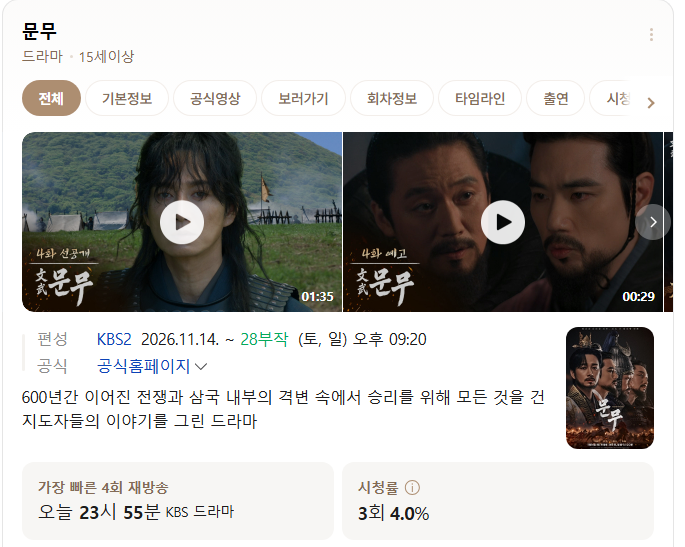
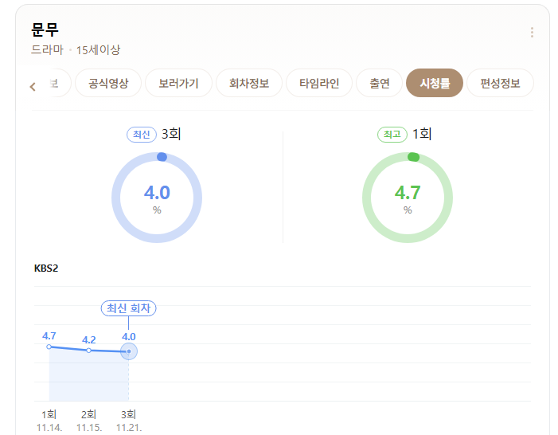
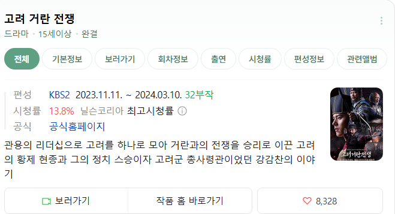
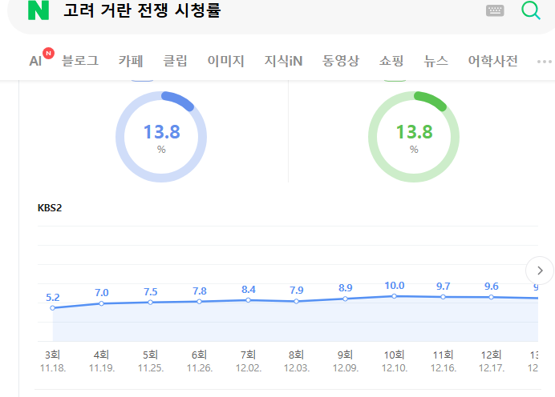

최저시청률 갱신
사극같은경우는 초반에는 낮아도 점점 올라가는 양산인데 아직초반이긴 하지만 2주 접어들었는데 하락중
고거전때 처럼 초반 커뮤와 뉴스에 올라오는양과 비교해도 글자체가 거의 안올라옴




최저시청률 갱신
사극같은경우는 초반에는 낮아도 점점 올라가는 양산인데 아직초반이긴 하지만 2주 접어들었는데 하락중
고거전때 처럼 초반 커뮤와 뉴스에 올라오는양과 비교해도 글자체가 거의 안올라옴


참깨새끼들이랑 손잡고 승리한 새끼들 이야기를
왜 보고 싶음? 보면 ㅈ같기만하지
사극에 목마른 노인네들만 보는구나
대길이 생각만남...ㅈㅈ
용의눈물 1화봐라 몰입 좆된다 요즘 고증어쩌고저쩌고 개설치고 정작 드라마가 좆박으니 저지랄난다